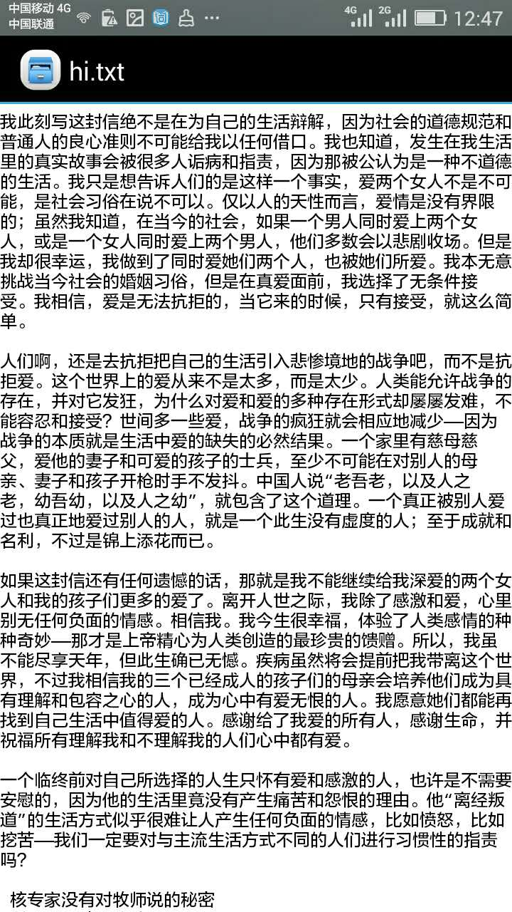
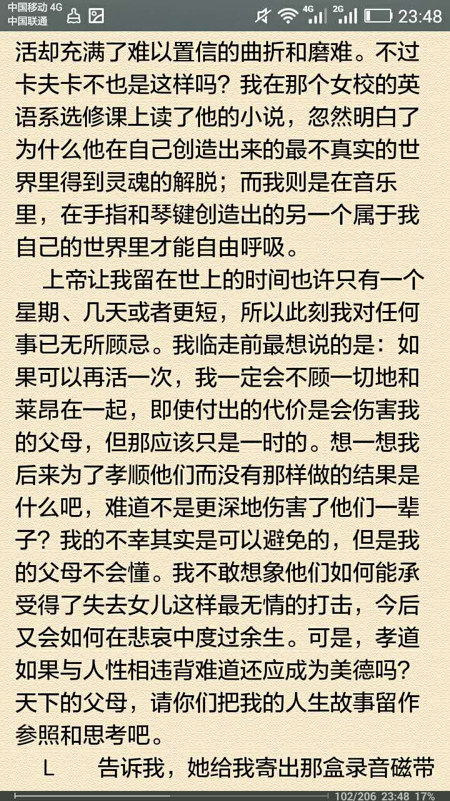

5
华尔街股票经纪人留给世人的忠告
詹姆斯·赫顿，男，58 岁，白人
股票经纪人
这句话，正印证了中国的老话：君子之交淡如水。一旦牵扯到利益，连朋友都没得做:
``` 永远不要无条件地相信任何人。即使他/她是你最愿意相信的人，发过山盟海誓的恋人，几十年的老友，熟人，长辈，军人，也无论他们声称是为了大众利益的革命家，还是誓言改造社会的政客，或是那些自称笃信上帝的人们——因为人性是永远上不了保险的一样东西。
```
``` 感情是无常的存在，有来就有去，一切只能顺其自然，就像对待宇宙万物的起落、发生和消亡一样。能长久是福分，但强求必定变成痛苦的根源。
```
人每时每刻都在变化。人生无处不交易： 我们做的每个想法和决定，都是在交易：正邪的交易，善恶的交易，执着和妥协的交易，婚姻的交易，投入和产出的交易... 谁说我们不是人生中的一名交易员？作为交易员，就要坦然接受交易型的人生。
这个案例，可能是书中最短的案例，但是也是我深有同感的案例。

6
``` 超级肥胖人的遗言 梅根·施罗德，31 岁，西班牙裔
```
看到这个案例，我在想，为什么不去减肥？为什么不控制自己？为什么不豁出去？为什么要自甘堕落？为什么总沉迷在自己的小世界里？
但后来想想，我也是 说就天下无敌，做就有心无力 罢了。
看看我自己，我说要减肥，也说了几个月了，但是似乎也没有减下去。腹肌也没有练出来。 看看我自己，我说要站桩，站桩能帮我增强各种身体机能，也说了几年了，但是似乎也没有坚持。 看看我自己，我说要做digital nomad，从上大学的时候就有的想法了，但是似乎也没有坚持。 ...
我知道其实成功很简单，只需要坚持学习。我知道健康很简单，只需要坚持练习。但人往往容易被习性拖累。
要想跳出自己的comfort zone，需要很大的坚忍和耐力。
能否真正地让自己发生改变，才是真正考验人的品质的东西！！！
7
著名杂志主编的双重人生
菲利浦·格尔，62 岁，白人
前纽约著名文学杂志主编
这个故事，我其实觉得是个喜剧。因为主人公死得其所。 他上进，他真诚，他不屈服于传统的伦理道德，勇敢追寻所爱。正如作者所说：
一个临终前对自己所选择的人生只怀有爱和感激的人，也许是不需要安慰的，因为他的生活里竟没有产生痛苦和怨恨的理由。他“离经叛道”的生活方式似乎很难让人产生任何负面的情感，比如愤怒，比如挖苦——我们一定要对与主流生活方式不同的人们进行习惯性的指责吗？

8
核专家没有对牧师说的秘密
匿名，83 岁，白人
著名核物理学家
如果这个人是希特勒，他应该不会有罪恶感，他不会有愧疚。
邪恶的人会因为自己的善良而苦恼。 善良的人会因为自己的邪恶而苦恼。 邪恶的人会因为自己的冷酷而骄傲。 善良的人会因为自己的善良而骄傲。
如果从结果来看，只要高兴，你管我是善是恶。如果苦恼，是善是恶又有何用？
此时，我体会到了 本来无一物，何处惹尘埃 的境界。
人和人的差别，真的很大。
这个故事，跟后面的死刑执行官类似。只不过核专家的工作影响全人类，而死刑执行官的工作只影响小部分人。
也许，唯一能消灭邪恶的东西，就是人的爱和良知了。
另外，既然别人已经匿名了，作者就不应该鼓励读者去猜测这个人到底是谁了。呵呵。
总之，每个人的心性都是不一样的，面对各种问题，只有靠自己来调节。如果能够抱着接纳一切的态度来看事情，才能让自己的内心恢复平静。
（本文首发于微信公众号： 零壹 ，微信搜索 零壹 或 magicof01 ，也可以扫描文章底部二维码快速关注）